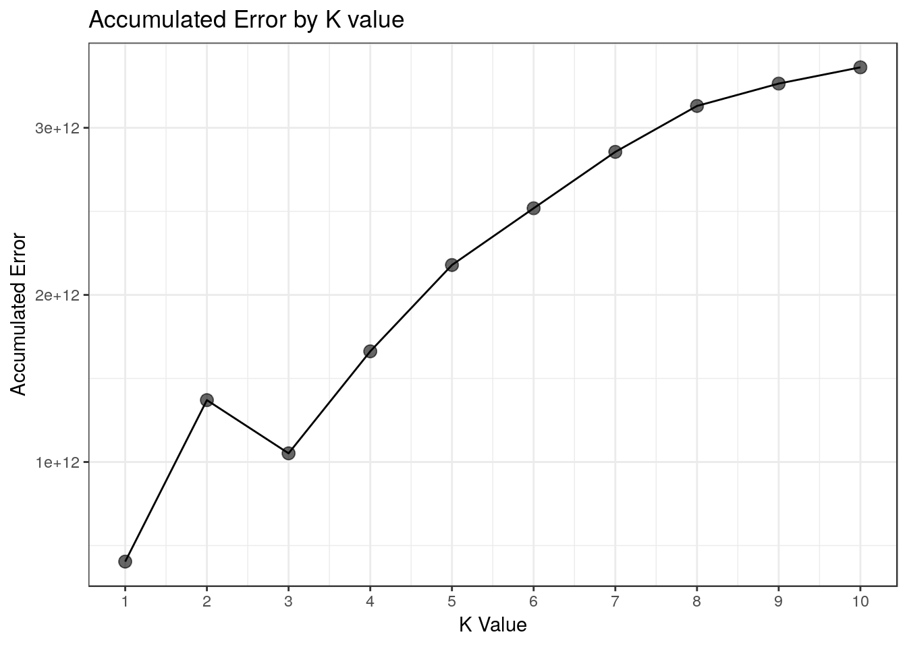

Case Based Reasoning System for MSRP estimation
Introduction
Employed data, scripts and a brief description can be found at the original repository. Further references can be found at the page of Prof. Ian Watson.
library(FNN)
library(here)
library(magrittr)
library(tidyverse)
source(here::here("code/calc_KNN_error.R"))
theme_set(theme_bw())Data Overview
Data has the following attributes:
Make: Make of the car;Model: Model of the car;Year: Manufacturing Date;Engine.Fuel.Type: Kind of fuel the engine runs on;Engine.HP: Engine HorsePower;Engine.Cylinders: Number of cylinders in the engine;Transmission.Type: Type of car transmission;Driven_Wheels: Wheels added;Number.of.Doors: Number of doors;Vehicle.Size: Vehycle size;Vehicle.Style: Vehycle style;highway.MPG: Miles per gallon on road;city.mpg: Miles per gallon on city;Popularity: Car popularity;MSRP: Manufacturer’s Suggested Retail Price and target variable.
Loading Data
read_csv(here::here("data/msrp.csv"),
progress = FALSE,
col_types =
cols(
Make = col_character(),
Model = col_character(),
Year = col_integer(),
`Engine Fuel Type` = col_character(),
`Engine HP` = col_integer(),
`Engine Cylinders` = col_integer(),
`Transmission Type` = col_character(),
Driven_Wheels = col_character(),
`Number of Doors` = col_integer(),
`Market Category` = col_character(),
`Vehicle Size` = col_character(),
`Vehicle Style` = col_character(),
`highway MPG` = col_integer(),
`city mpg` = col_integer(),
Popularity = col_integer(),
MSRP = col_integer()
)) %>%
drop_na() -> car_data Dummify Categorical Variables
car_data %>%
mutate(
Make = as.numeric(factor(Make)),
Model = as.numeric(factor(Model)),
`Engine Fuel Type` = as.numeric(factor(`Engine Fuel Type`)),
`Transmission Type` = as.numeric(factor(`Transmission Type`)),
Driven_Wheels = as.numeric(factor(Driven_Wheels)),
`Market Category` = as.numeric(factor(`Market Category`)),
`Vehicle Size` = as.numeric(factor(`Vehicle Size`)),
`Vehicle Style` = as.numeric(factor(`Vehicle Style`)))-> car_data
car_data %>%
glimpse()## Observations: 11,812
## Variables: 16
## $ Make <dbl> 6, 6, 6, 6, 6, 6, 6, 6, 6, 6, 6, 6, 6, 6, ...
## $ Model <dbl> 2, 1, 1, 1, 1, 1, 1, 1, 1, 1, 1, 1, 1, 1, ...
## $ Year <int> 2011, 2011, 2011, 2011, 2011, 2012, 2012, ...
## $ `Engine Fuel Type` <dbl> 8, 8, 8, 8, 8, 8, 8, 8, 8, 8, 8, 8, 8, 8, ...
## $ `Engine HP` <int> 335, 300, 300, 230, 230, 230, 300, 300, 23...
## $ `Engine Cylinders` <int> 6, 6, 6, 6, 6, 6, 6, 6, 6, 6, 6, 6, 6, 6, ...
## $ `Transmission Type` <dbl> 4, 4, 4, 4, 4, 4, 4, 4, 4, 4, 4, 4, 4, 4, ...
## $ Driven_Wheels <dbl> 4, 4, 4, 4, 4, 4, 4, 4, 4, 4, 4, 4, 4, 4, ...
## $ `Number of Doors` <int> 2, 2, 2, 2, 2, 2, 2, 2, 2, 2, 2, 2, 2, 2, ...
## $ `Market Category` <dbl> 38, 67, 64, 67, 63, 67, 67, 64, 63, 63, 64...
## $ `Vehicle Size` <dbl> 1, 1, 1, 1, 1, 1, 1, 1, 1, 1, 1, 1, 1, 1, ...
## $ `Vehicle Style` <dbl> 9, 7, 9, 9, 7, 9, 7, 9, 7, 7, 9, 9, 7, 7, ...
## $ `highway MPG` <int> 26, 28, 28, 28, 28, 28, 26, 28, 28, 27, 28...
## $ `city mpg` <int> 19, 19, 20, 18, 18, 18, 17, 20, 18, 18, 20...
## $ Popularity <int> 3916, 3916, 3916, 3916, 3916, 3916, 3916, ...
## $ MSRP <int> 46135, 40650, 36350, 29450, 34500, 31200, ...Checking for missing values
row.has.na <- apply(car_data,
1,
function(x){any(is.na(x))})
noquote(paste('Number of rows with misssing values: ',
sum(row.has.na)))## [1] Number of rows with misssing values: 0Applying scale to predictor variables
num.vars <- sapply(car_data,
is.numeric,
simplify=F)
num.vars$MSRP = FALSE
num.vars <- unlist(num.vars)
car_data[num.vars] <- lapply(car_data[num.vars],
scale)
car_data %>%
sample_n(10)## # A tibble: 10 x 16
## Make Model Year `Engine Fuel Ty… `Engine HP` `Engine Cylinde…
## <dbl> <dbl> <dbl> <dbl> <dbl> <dbl>
## 1 -0.984 -1.27 -0.969 0.591 -0.545 0.200
## 2 -0.984 1.13 0.611 0.591 -1.52 -0.942
## 3 -0.214 -0.293 -0.179 -0.0820 0.691 0.200
## 4 0.696 0.985 0.611 0.591 -1.09 -0.942
## 5 0.906 1.20 -0.838 0.591 -1.00 -0.942
## 6 -0.284 -0.481 -2.42 0.591 -1.54 -0.942
## 7 0.556 1.08 0.479 -0.0820 0.481 0.200
## 8 -0.984 1.15 -2.15 0.591 -0.865 0.200
## 9 0.696 -1.31 0.611 0.591 -0.618 -0.942
## 10 -0.634 1.25 0.611 -2.10 0.353 0.200
## # ... with 10 more variables: `Transmission Type` <dbl>,
## # Driven_Wheels <dbl>, `Number of Doors` <dbl>, `Market Category` <dbl>,
## # `Vehicle Size` <dbl>, `Vehicle Style` <dbl>, `highway MPG` <dbl>,
## # `city mpg` <dbl>, Popularity <dbl>, MSRP <int>Validation
Split data into training/testing sets
set.seed(101)
## Adding surrogate key to dataframe
car_data$id <- 1:nrow(car_data)
car_data %>%
dplyr::sample_frac(.8) -> train
dplyr::anti_join(car_data,
train,
by = 'id') -> testDissociate predictors from target variable/surrogate key
train %>%
select(-MSRP,-id) -> train.predictors
train %>%
select(MSRP, id) -> train.response
test %>%
select(-MSRP,-id) -> test.predictors
test %>%
select(MSRP, id) -> test.responseApply K Nearest Neighbor
Calculate accumulated error
results <- data.frame(matrix(ncol = 0, nrow = 10))
results$k <- seq(1,10,1)
accum_err <- c()
for(num in results$k) {
calc_KNN_error(num,
train.predictors,
test.predictors,
train$id,
train.response,
test.response) -> err
accum_err <-c(accum_err, err)
}
results$accum_err <- accum_err
results## k accum_err
## 1 1 4.040153e+11
## 2 2 1.370267e+12
## 3 3 1.051880e+12
## 4 4 1.662288e+12
## 5 5 2.178911e+12
## 6 6 2.518559e+12
## 7 7 2.855903e+12
## 8 8 3.130836e+12
## 9 9 3.264634e+12
## 10 10 3.361961e+12results %>%
ggplot(aes(k,accum_err)) +
geom_point(size = 3,
alpha = .6) +
geom_line() +
scale_x_continuous(breaks=seq(1,10,1)) +
labs(y="Accumulated Error", x= "K Value") +
ggtitle("Accumulated Error by K value")
Results
- A smaller K seems to render less accumulated error.
- At K = 2, we have an unusual spike in terms of accumulated error, which one could impute on a probable overfit.
- K = 1 renders the smallest amount of Accumulated Error.